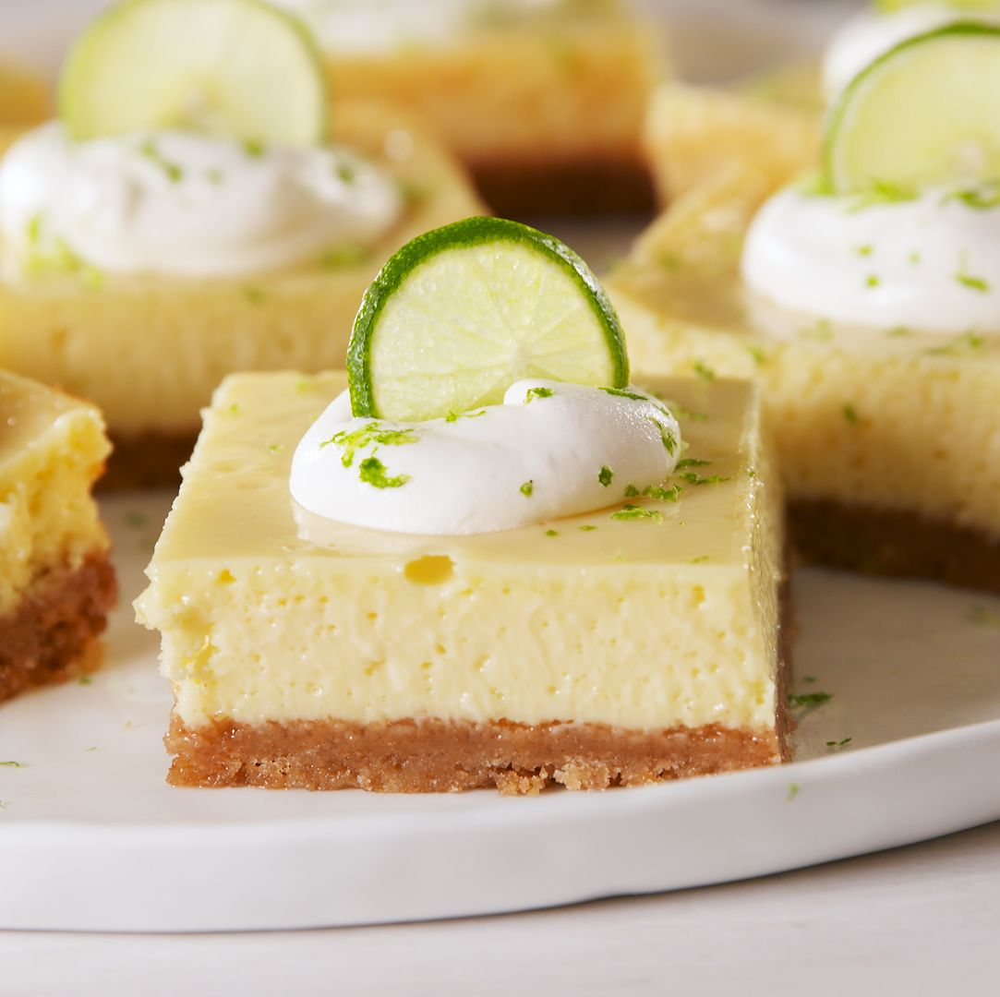

Key Lime Bars

Description
Easy to make and quick to prep, these bars are tasty!
Ingridients
- Condensed Milk
- 10 oz lime juice
- 4 crushed Nature Valley bars
- Zest of two limes
- 1 tbsp. butter
Directions
- Combine wet ingridients and zest in large bowl and whisk until the the consistency of pancake batter.
- Butter baking pan and layer crushed Nature Valley bars.
- Slurry lime/milk mixture onto crumbs until covered.
- Refridgerate 2 hours before cutting into 4" squares.
- Enjoy!